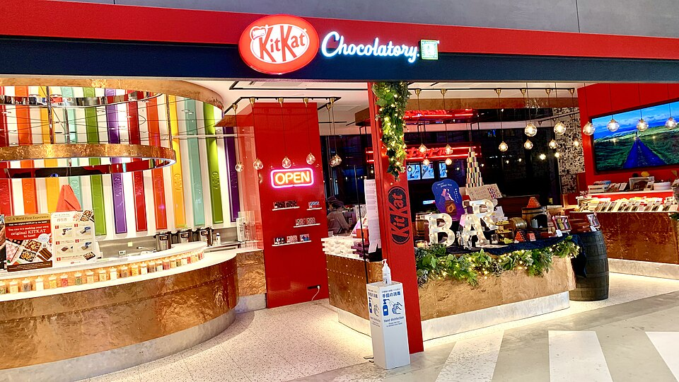

KitKats in Japan!
There have been more than 400 limited-edition seasonal and regional flavors of Kit Kat chocolate bars produced in Japan since 2000, many exclusive to the country. Nestlé, which operates the Kit Kat brand in Japan, reports that the brand overtook Meiji Chocolate as the top-selling confectionery in Japan from 2012 to 2014.
The company's marketing campaign, which partnered with Japan Post to sell the bar in 20,000 post offices, won an award in 2010. The campaign encouraged associations of the product's name with the coincidental cognate Kitto Katsu (きっと勝つ), translated as "You will surely win", and the bars could be mailed as a good luck charm for students ahead of university exams.
Explore more!You will surely win!
Marketing for Kit Kats in Japan is believed to have benefited from the coincidental false cognate with "Kitto Katsu", a phrase meaning "You will surely win" in Japanese. Market research has found the brand is strongly linked with good luck charms, especially among students heading into exams.
See the campaignWhy so many flavors?
Nestlé credits the tradition of omiyage, where people bring regional specialties home for family and co-workers after a trip. Limited seasonal flavors add what the company calls a "scarcity and rarity of value".
Short runs also suit Japanese convenience stores, which rotate products often and charge no fee to list a new one.
Browse the flavors